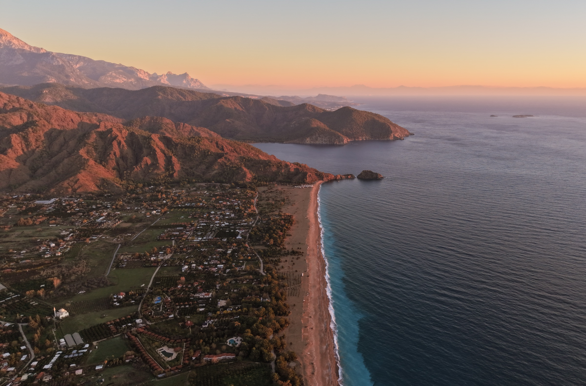

Türkiye'nin güney kıyısında, Toros dağlarının denize kavuştuğu noktada küçük bir vadi uzanır. Çıralı, 1990'lardan bu yana kıyı koruma statüsüyle güvence altına alınmış, yapılaşmanın sınırlandırıldığı nadir yerleşimlerden biridir; bu yüzden burada yüksek oteller, beton rıhtımlar ya da kalabalık sahil şeritleri göremezsiniz. 3,5 kilometre uzunluğundaki plaj, Caretta caretta deniz kaplumbağaları için her yıl yuvalamanın sürdüğü alan olarak uluslararası koruma statüsü taşımaktadır.
Çıralı'nın arka planı, yerleşim kadar eskidir. MÖ 2. yüzyılda kurulmuş Antik Olympos kenti, otelin hemen bitişiğinde, Likya Birliği'nin önemli liman şehirlerinden biriydi; bugün Roma dönemi mezarları ve tiyatro kalıntıları vadinin içine karışmış durumdadır. Birkaç kilometre ötede, Yanartaş'ta yeraltından sızan doğal gazın 2.500 yıldır yakıp tuttuğu alevler Homeros'un Chimaera efsanesine ilham kaynağı olmuştur. Çıralı, mitoloji, tarih ve doğanın bu kadar iç içe geçtiği ender yerlerden biridir.

Yaklaşık 3,5 kilometre uzunluğunda, ince çakıl ve kumdan oluşan el değmemiş bir Akdeniz kıyısı. Kıyı şeridinin tamamı doğal sit alanı; oteller ve restoranlar beachfront'a inşa edilemez. Her yıl Mayıs'tan Ekim'e kadar Caretta caretta deniz kaplumbağaları bu plajda yumurtalar.
Her yaz caretta carettalar yuvalamak için döner. Plaj onlarındır.
Arada bir size de eşlik etmeye razı olurlar.

Olympos Antik Kenti ziyaret edilmek istemez. Sadece durur. Lodge'un ismini aldığı antik kent, otelin hemen bitişiğindedir; bahçeden çıkıp on dakika yürüdüğünüzde Likya'nın en iyi korunmuş kentlerinden birinin içindesinizdir. Roma döneminden kalma mezarlar, tiyatro kalıntıları ve denize uzanan surlar.

Yeraltından sızan doğal gazın yüzeyde tutuşmasıyla oluşan, 2.500 yıldır kesintisiz yanan alevler. Mitolojide bu alevler, kahraman Bellerophon'un Pegasus'un sırtından öldürdüğü Chimaera canavarının nefesidir. Gece yürüyüşü önerilir; karanlıkta kayalar arasından çıkan alevler zaman kavramını askıya alır.

The Sunday Times'ın dünyanın en iyi on yürüyüş rotasından biri seçtiği 540 kilometrelik patika, Çıralı'dan geçer. Antik kentler, Likya mezarları, ıssız koylar ve dağ köyleri birbirini izler. Çıralı bölümü Olympos–Adrasan hattını kapsar.
Bazı yerler sizi değiştirmez. Sadece kendinizi hatırlatır.


Kano, SUP, bisiklet, yürüyüş ve daha fazlası. Çıralı'nın doğasını keşfetmenin sayısız yolu.
Keşfet →

Olympos Lodge'da bir gün sade bir ritimle başlar. Açık büfe kahvaltı, bahçede huzur, plajda kabana ve akşam ateşi. Hepsi konaklamanıza dahil.
Keşfet →Çıralı; plajıyla, harabeleriyle, alevleriyle ve korunan sessizliğiyle, Türkiye'de başka yerde bulunması giderek zorlaşan bir şeydir.